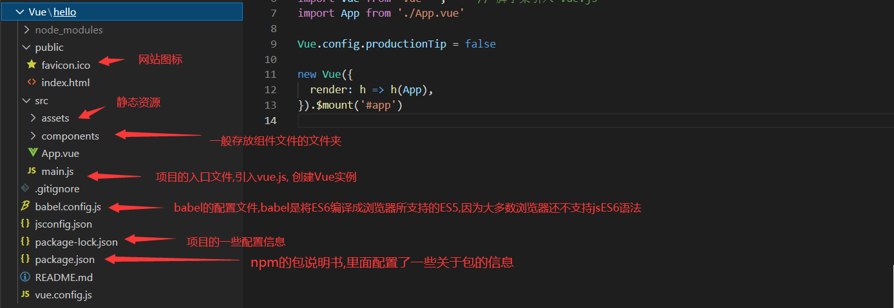

JavaScript
1、初识JavaScript
在网页中:
- html表示网页的结构
- CSS表示网页的样式
- JavaScript表示网页的行为
三大核心
(1)ECMAScript:javaSript的标准语法
(2)BOM(Browser Object Model):一整套操作浏览器的属性和方法
(3)DOM(Document Object Model):一整套操作文档流的属性和方法
->通过JS语法让页面发生变换,让文档变换
书写位置
行内式
(1) a标签(本身有行为)
-> 因为a标签,本身有动作行为出现,需要区分你是跳转还是执行JS代码
-> 如果不是跳转在href属性里写一个JavaScript声明:Js代码;
(2) 非a标签内嵌式
->在html文件的任意标签内书写一个script标签,在此标签中书写JS代码
->推荐在head标签或者body标签的末尾1
2
3<script type = "text/javascript">
js代码
</script>外链式
->**在script标签的src属性中引用JS文件,JS代码书写在JS文件中
->注意:使用外链式之后,再在script标签中书写JS代码没意义(哪怕只写了src属性,无法使用内嵌式)1
2
3<script src = "js文件路径">
</script>示例:
1
2
3
4
5
6
7
8
9
10
11
12
13
14
15
16
17
18
19
20
21
22
23
<html>
<head>
<meta charset="utf-8">
<title>test</title>
<script type="text/javascript">
alert('我是内嵌式js代码')
</script>
</head>
<body>
<!-- 行内式 -->
<h1>alter()方法</h1>
<a href="javascript: alert('helloword!');">点击试试</a>
<a href="alert('hell!');">不加javascript再点击试试</a>
<div onclick="alert('hello')">
div点击试试
</div>
<!-- 内嵌式 -->
<!-- 外联式 -->
<!-- <script src="helloword.js"> -->
</body>
</html>
输出语法
1.alert():
-> 以浏览器弹出层形式展示内容,堵塞后面的代码执行
-> 只要不是纯数字,单双引号无所谓
2.console():
->在浏览器控制台输出,方便调试,不影响页面展示,不会堵塞后面的代码执行
3.document.write()
=>直接在html页面显示
特殊: ->由于是直接输出到文档流,故可以解析标签
2、变量与数据类型
2.1定义变量
=>声明变量格式: var 变量名 (标识符规则和规范与java类似)
=>不使用var 关键字也可以声明一个变量(不推荐)
2.2数据类型
Number 数值
- 包括一切数字(浮点数,任意进制数如0x十六进制,0八进制)
- NaN: Not a Number, 即是一个数值类型,但不是数字
- 科学计数法(如:2e5)
Undefined 空(未定义)
- undefined
Null 空
- null
String 字符串
用单或者双引号或者反引号(`)包裹表示
模板字符串:
1 | let name = "lili"; //模板字符串 |
常用方法:substring 截取字符串
1 | //[) 含头不含尾 |
Boolean 布尔值
==0 /0.0 / null / undefined / NaN 这些都视为fasle ,其他一律为真(true)==
- true 在计算机存储的时候是1
- false 在计算机存储的时候是0
引用数据类型
Object
Function
typeof检测数据类型
关键字typeof(以String类型返回)
用法一: typeof 变量
1 | var n2 = typeof n1 ; //将n1的数据类型以字符串的形式返回给n2 |
用法二: typeof(),相较于用法一没有局限性
数据类型转换
Number类型
1. Number()
- 语法: Number(要转换的数据)
- 返回值: 转换好的数据,转换不了(如含有字符串),则返回NaN
2. parseInt() 取整,依次转换
- 语法:parseInt(转换的的数据)
- 特点: 一位一位的转换,每识别到一个数字就返回一个,直到遇到非数字(包括小数点)就不往下看了,第一位是非数字直接返回NaN
1 | parseInt("2a5") ; // 返回 2 |
3.parseFloat() 比parseFloat()多认识一个小数点
4. 非加法数学运算
- a-0
- a*1
- a/1
String类型
1. Stirng()
- 语法: String(转换的数据)
- 特点: 任意的数据都能转
2. toString()
- 语法: 转换的数据.toString()
- 特点: Undefined和null不能转换
3. + 与java同样的字符串链接符
Boolean 类型
Boolean()
- 语法:Boolean(转换的数据)
- 特点: **只有这五个是false,分别是: 空字符串'' NaN,null , Undefined ,,0 **
其他全是true - 注意!:即使[] =='' 的结果为true,Boolean([])的结果也还是true
3、运算符号
1.数学运算符
与java基本一致,比java多个幂运算符号
如:
1 | 2**10 //结果为1024 ,2的10次方 |
2.比较运算符号
与java不同或者新增的是:
- == : 只比较值,不管数据类型
- === :既比较值又比较数据类型
1 | console.log(1=='1'); //true |
- !===即三等于的的取反,值不一样就算true**
- !==,即双等于的取反,数据类型和值都不一样才是true**
3.逻辑运算符号
与java一致
4.if语句
与java一致,注意:条件位置处，必须Boolean的值 / 表达式 / 变量，如果不是Boolean类型的话，JS会自动进行转换
例如这些 ==if（0 /0.0 / null / undefined / NaN）{ } 这些 if 都会认为是false。==因为*0/0.0/null/undefined/NaN* 这些值转换为布尔值都是 false， ==除此以外一律为真。==
5.switch语句
与java基本一致,只能判断===
其他语句也基本与java一致
4、函数
- 一种引用数据类型
- 对一段代码的封装
4.1 定义函数
声明式定义:
- 语法: function 函数名(){}
赋值式定义:
- 语法: var 函数名 = function(){}
4.2 函数调用
声明式定义函数和赋值式定义的调用的区别
- 声明式函数:可以在声明前后调用
- 赋值式函数: 只==能在赋值后调用==
4.3 函数参数
实参和形参不对应的情况也不会报错
- 形参多: 多的形参为undefined
- 实参多: 形参不接受
4.4 arguments(参数数组)
- 函数自带的变量
- 表示所有实参的集合(伪数组)
arguments的属性:
- length表示参数的个数
1.预解析
是指在代码之前做的准备工作,类似C语言的预处理,JS代码的一种运行机制
1.1 var 声明变量
实际上在代码的执行时,会*预先解析var声明的变量
注: 用var声明的变量是全局变量,而在ES6标准后可使用 let 来声明局部变量
1 | let 局部变量 ; |
1.2 定义函数
- 声明式定义函数 :在预计解析时将函数准备好
(不建议多用,因为全局可用太乱了) - 赋值式定义函数:预计解析时只是声明有这么一个变量
2.当预解析时函数与变量同名
2.1 预解析的最高级
与其他编程语言有所不同
- 只要有JS代码中可以预解析的内容,无论要解析的语句在会先进行解析(哪怕是return或者if语句判断为false)
1 | console.log(num); //不会报错 |
2.2 优先级
在JS中函数是一等公民,在预解析时只解析函数
如:
1 | fn(); //(2)按代码顺序执行,打印 |
(建议:(1)变量尽量以名词命名,尽可能用到两三个单词;(2)函数名尽量以功能区分)
3. 作用域
用来限制变量的使用范围
3.1 全局作用域
全局可用,叫做window
3.2 局部作用域(也叫私有域)
函数体里面的作用域,只有该函数内可用
3.3 变量的三个机制
- 定义机制:只能在自己的作用域和子级作用域有效
- 使用机制: 越明确越优先,即先在自己的作用域找,找不到以次往f父作用域上找(全局也找到不到报错)
- 赋值机制:优先在自己作用域内查找,找不到就往父作用域上找还不到也不会报错 ,因为由于两种定义变量的方式存在(如定义变量可以 a = 10 这样定义) ,将会在全局作用域(windows)定义一个变量
3.4 作用域的预解析
- 全局下先预解析
- 局部的预解析只有在调用的时候才会预解析
(由于函数是单独进行预解析,因此是*参数传递在前,预解析在后)*
事件
常见的事件
click 点击事件
当用户点击了html元素得时候,会触发该事件
mouseover 鼠标覆盖事件
当鼠标移动到元素上面时
mouseout 鼠标离开事件
当鼠标从元素上离开时
focus 获得焦点事件
当获得焦点时触发
blur 失去焦点事件
失去焦点事件
load 加载事件
当元素被加载时触发, 如js中可用浏览器对象 window.onload
函数和元素结合:
- 函数还可以当作一个页面元素的事件处理函数
- 当页面的某个元素触发行为时,执行某个函数
- 语法:元素.onclick = 函数名或元素.onclick = function (){}
页面元素的简单操作
在一个页面里,标签的id名(只有id可以),可以直接当成一个变量来使用
这个元素就代表这个标签
1
2
3
4
5
6
7
8
9
10
11
12
13
14
15
16
17
18
19
20
21
22
23
24
25
26
27
28
29
30
31
32
33
34
35
36
<!--
函数还可以当作一个页面元素的事件处理函数
当页面的某个元素触发行为时,执行某个函数
页面元素的简单操作
在一个页面里,标签的id名(只有id可以),可以直接当成一个变量来使用
这个元素就代表这个标签
-->
<html>
<head>
<meta charset="utf-8">
<title>test</title>
</head>
<body>
<div id="box">
点击试试
</div>
<input id="frist"/>
+
<input id="second" />
<button id="but">=</button>
<input id="res" disabled="disabled"/>
</body>
<script type="text/javascript">
console.log(box);
box.onclick = function(){
console.log('我是一个事件处理函数');
}
but.onclick = function(){
var resule;
resule = (Number(frist.value)+Number(second.value)) ; //注意:从页面拿出来的都是字符串类型
console.log(resule)
res.value = resule;
}
</script>
</html>
6、引用数据类型详解
- 对象:承载一堆数据的盒子
- 函数:承载了一段代码的盒子
1 创建对象的方式
- 字面量创建
注: ==成员以 key:value 的形式==表示,并且多个成员用逗号隔开
1 | var o1 = { //创建对象 o1 |
- 内置构造方法创建
1 | var o = new Object(); |
区别:
(1)字面量创建可以直接在里面添加数据,数据以键值对key:value的形式出现,key表示数据名字,value表示值用(,)分隔
2.操作对象语法
增: 向对象添加成员
点语法格式:对象名.成员名 = 值
数组关联语法:对象名[“成员名”] = 成员名] = 值
删:删除对象的成员
点语法格式:==delete== 对象名.成员名
数组关联语法:==delete== 对象名[“成员名”]
改:修改对象的成员
点语法格式:对象名.成员名 = 值
数组关联语法:对象名[“成员名”] = 成员名] = 值
查:获取对象的成员
点语法格式:对象名.成员名
数组关联语法:对象名[“成员名”]
如果没有此成员,则为undefined
点语法和数组关联语法的区别
数组关联语法成员名可以使用变量和拼接字符串
点语法成员名不能使用变量和拼接字符串
**注意:*在控制台打印对象时
->不展开时是当前的样子
->展开后是最终的样子
解决方案: (1)使用对象名.成员名直接获取 (2)使用console.table()的方式打印对象,就会得到当前的值
3. for in循环遍历对象的属性
类似java的增强for 即forearch
1 | var o1 = { |
4. in关键字:判断一个成员判断是否在对象里
语法: “成员名” in 对象名
内置对象:Date
1 | new Date() |
JSON
JSON 简介
JSON(JavaScript Object Notation, JS 对象简谱) 是一种轻量级的数据交换格式。它基于 ECMAScript (欧洲计算机协会制定的js规范)的一个子集，采用完全独立于编程语言的文本格式来存储和表示数据。简洁和清晰的层次结构使得 JSON 成为理想的数据交换语言。 易于人阅读和编写，同时也易于机器解析和生成，并有效地提升网络传输效率。
在javaScrip 一切皆为对象,任何js支持的类型,都可以用JSON来表示
JSON 格式
都以键值对的形式表示, 即 key: value
对象都用 {} 形式为:
{"属性1":属性1的值,"属性2":属性2的值,"属性3":属性3的值}数组(即使包含了多个对象)都用 [] , 形式为:
[{"对象1的属性1":对象1的属性1的值,"对象1的属性2":对象1的属性2的值},{"对象2的属性1":对象2的属性1的值,"对象2的属性2":对象2的属性2的值}]
JSON 转换
在JavaScript中:
1 | // 假如定义了一个对象 let user = { name:'mm', sex : '女' ,age : 19 }; |
在Java中:
Java中并没有内置JSON的解析，因此使用JSON需要借助第三方类库。
下面是几个常用的 JSON 解析类库：
注:本文以阿里的 FastJson为例说明
依赖导入
1 | <!--FastJson的Maven依赖--> |
流程说明:
java变量 <--> JSON对象 <--> 字符串
将java变量转换为JSON
1 | public void testJson() { |
将JSON转换为java变量
1 | public void testJson2() { |
方法使用
| 方法 | 作用 |
|---|---|
JSON.parseObject(String) |
将字符串解析为 JSON 对象 |
JSON.parseArray(String) |
将从字符串解析为 JSON 数组 |
JSON.toJSONString(obj/array) |
将 JSON 对象或 JSON 数组转化为字符串 |
实例:
1 | //将字符串解析为JSON对象 |
操作BOM对象(重点)
B: 浏览器 , BOM浏览器模型
浏览器(内核)介绍
- IE
- Chrome
- FireFox
- Safair
常用的BOM对象
window对象 代表浏览器窗口
screen 代表屏幕尺寸
location 代表当前页面的URL信息
1 | host: "www.baidu.com" |
doucument 代表当前的页面,HTML,DOM文档树
1 | document.title //获取当前页面的标题 |
history
1 | history.back //回退 |
操作DOM对象(重点)
网页就是一个Dom树形结构!
获得dom节点
1 |
|
更新dom节点
1 | <div id = "id1"> |
remove 删除节点
由于指针不能指向自己,所以要删除一个节点,必须要先获得父节点,再通过父结点来删除
==注意:删除结点是动态的==(即当删除第一个子节点的时候,原来的第二个子节点就变成了现在的第一个子结点)
1 |
|
append 追加结点
在document结点后面添加结点
1 |
|
insert 插入结点
1 |
|
当拿到结点document结点(id也能直接进行操作)后,我们可以进行一下操作
操作文本
id1.innerText = “文本内容” ; 修改文本的值,==会把之前的文本内容清除,不可解析html标签==
id1.innerHTML = “文本内容” ; 修改文本的值,==与上面的唯一区别是可以解析html标签==
操作CSS(更改样式)
1 | p1.style.color = "red" ; //修改颜色 |
操作表单(验证表单)
注:可以通过添加 required 属性使文本框变为必填项,不填写就提交会有提示==,表单里的input标签,一定要有name属性才能发送到后台==
获得表单的值
1 |
|
表单数据加密(md5)以及提交验证
==表单中的onsubmit 属性:用于提交验证,如果事件函数返回true,则提交,反之不提交,注意还要写一个return,并且默认为true==
==此外,在提交表单时容易被人抓包发现表单的数据,==,因此我们需要对表单数据进行加密
如下代码对表单进行了加密
1 |
|
==由于直接对密码框进行密文赋值,会导致密码框在提交的一瞬间变长,不能提升用户体验,所以我们可以采用一个隐藏密码框来进行赋值传输==
1 |
|
jQuery
jQuery 是一个 JavaScript 库。
jQuery 极大地简化了 JavaScript 编程。
jQuery 很容易学习。
简述初识
jQuery 库位于一个 JavaScript 文件中，其中包含了所有的 jQuery 函数。==请注意，<script> 标签应该位于页面的 <head> 部分。==
1 | <head> |
谷歌CDN:
1 | <head> |
微软CDN:
1 | <head> |
基础 jQuery 实例
下面的例子演示了 jQuery 的 hide() 函数，隐藏了 HTML 文档中所有的
元素。
1 | <html> |
jQuery语法:
通过 jQuery，您可以选取（查询，query） HTML 元素，并对它们执行“操作”（actions）。
==基础语法是：*$(selector).action()*==
- 美元符号定义 jQuery
- 选择符（selector）“查询”和“查找” HTML 元素
- jQuery 的 action() 执行对元素的操作
示例:
$(this).hide() - 隐藏当前元素
$(“p”).hide() - 隐藏所有段落 (标签选择器)
$(“.test”).hide() - 隐藏所有 class=”test” 的所有元素 (类选择器,注意加引号)
$(“#test”).hide() - 隐藏所有 id=”test” 的元素 (id选择器,注意加引号)
提示：jQuery 使用的语法是 ==XPath 与 CSS 选择器语法的组合。==
文档就绪函数
您也许已经注意到在我们的实例中的所有 jQuery 函数位于一个 document ready 函数中：
1 | $(document).ready(function(){ |
这是为了防止文档在完全加载（就绪）之前运行 jQuery 代码。
如果在文档没有完全加载之前就运行函数，操作可能失败。下面是两个具体的例子：
- 试图隐藏一个不存在的元素
- 获得未完全加载的图像的大小
jQuery选择器
jQuery选择器与CSS的选择器基本一致
注意:选择器表示时需要用引号表示,特别的 id 可以之间写在括号内或者用CSS选择表示(加引号)
1 | //设有一个带有 <p id="id"></p> |
| 语法 | 描述 |
|---|---|
| $(this) | 当前 HTML 元素 |
| $(“p”) | 所有 元素 |
| $(“p.intro”) | 所有 class=”intro” 的 元素 |
| $(“.intro”) | 所有 class=”intro” 的元素 |
| $(“#intro”) | id=”intro” 的元素 |
| $(“ul li:first”) | 每个
|
| $(“[href$=’.jpg’]”) | 所有带有以 “.jpg” 结尾的属性值的 href 属性 |
| $(“div#intro .head”) | id=”intro” 的 元素中的所有 class=”head” 的元素 |
jQuery事件
jQuery 事件处理方法是 jQuery 中的核心函数。
事件处理程序指的是当 HTML 中发生某些事件时所调用的方法。术语由事件“触发”（或“激发”）经常会被使用。
通常会把 jQuery 代码放到
部分的事件处理方法中：常见事件:
| $(document).ready(function) | 将函数绑定到文档的就绪事件（当文档完成加载时） |
|---|---|
| $(selector).click(function) | 触发或将函数绑定到被选元素的点击事件 |
| $(selector).dblclick(function) | 触发或将函数绑定到被选元素的双击事件 |
| $(selector).focus(function) | 触发或将函数绑定到被选元素的获得焦点事件 |
| $(selector).mouseover(function) | 触发或将函数绑定到被选元素的鼠标悬停事件 |
jQuery 名称冲突:
jQuery 使用 $ 符号作为 jQuery 的简介方式。
某些其他 JavaScript 库中的函数（比如 Prototype）同样使用 $ 符号。
jQuery 使用名为 noConflict() 的方法来解决该问题。
==*var jq=jQuery.noConflict()*，帮助您使用自己的名称（比如 jq）来代替 $ 符号。==
1 |
|
总结:
由于 jQuery 是为处理 HTML 事件而特别设计的，那么当您遵循以下原则时，您的代码会更恰当且更易维护：
- 把所有 jQuery 代码置于事件处理函数中
- 把所有事件处理函数置于文档就绪事件处理器中
- 把 jQuery 代码置于单独的 .js 文件中
- 如果存在名称冲突，则重命名 jQuery 库
jQuery效果
隐藏、显示、切换，滑动，淡入淡出，以及动画，哇哦！
隐藏与显示
函数:
- hide((speed,callback)) 隐藏
- show((speed,callback)) 显示
- toglgle((speed,callback)) 切换
语法：
1 | $(selector).toggle(speed,callback); |
可选的 speed 参数规定隐藏/显示的速度，可以取以下值：”slow”、”fast” 或毫秒。
可选的 callback 参数是 toggle() 方法完成后所执行的函数名称。(即回调函数)
==注意:参数类型必须是字符串==
淡入谈出:
1 | fadeIn(speed,callback); // 淡入 |
可选的 speed 参数规定效果的时长。它可以取以下值：”slow”、”fast” 或毫秒。
可选的 callback 参数是 fading 完成后所执行的函数名称。
Ajax
Ajax即Asynchronous Javascript And XML（异步JavaScript和XML）在 2005年被Jesse James Garrett提出的新术语，用来描述一种使用现有技术集合的‘新’方法，包括: HTML 或 XHTML, CSS, JavaScript, DOM, XML, XSLT, 以及最重要的XMLHttpRequest。 [3] 使用Ajax技术网页应用能够快速地将增量更新呈现在用户界面上，而不需要重载（刷新）整个页面，这使得程序能够更快地回应用户的操作。
Ajax如何工作:
- 网页中发生一个事件（页面加载、按钮点击）
- 由 JavaScript 创建 XMLHttpRequest 对象
- XMLHttpRequest 对象向 web 服务器发送请求
- 服务器处理该请求
- 服务器将响应发送回网页
- 由 JavaScript 读取响应
- 由 JavaScript 执行正确的动作（比如更新页面）
样例:
html页面:
1 |
|
js代码:
1 | Function loadDoc() |
XMLHttpRequest
Ajax 的核心是 XMLHttpRequest 对象。
XMLHttpRequest 对象用于同服务器交换数据。
所有现代浏览器都支持 XMLHttpRequest 对象。XMLHttpRequest 对象用于同幕后服务器交换数据。这意味着可以更新网页的部分，而不需要重新加载整个页面。
创建XMLHttpRequest 对象
1 | var xhttp; |
XMLHttpRequest 对象方法
| new XMLHttpRequest() | 创建新的 XMLHttpRequest 对象 |
|---|---|
| abort() | 取消当前请求 |
| getAllResponseHeaders() | 返回头部信息 |
| getResponseHeader() | 返回特定的头部信息 |
| open(method, url, async, user, psw) | 规定请求 method：请求类型 GET 或 POST url：文件位置 async：true（异步）或 false（同步） user：可选的用户名称 psw：可选的密码 |
| send() | 将请求发送到服务器，用于 GET 请求 |
| send(string) | 将请求发送到服务器，用于 POST 请求 |
| setRequestHeader() | 向要发送的报头添加标签/值对 |
GET 还是 POST？
GET 比 POST 更简单更快，可用于大多数情况下。不过，请在以下情况始终使用 POST：
- 缓存文件不是选项（更新服务器上的文件或数据库）
- 向服务器发送大量数据（POST 无大小限制）
- 发送用户输入（可包含未知字符），POST 比 GET 更强大更安全
XMLHttpRequest 对象属性
| 属性 | 描述 |
|---|---|
| onreadystatechange | 定义当 readyState 属性发生变化时被调用的函数 |
| readyState | 保存 XMLHttpRequest 的状态。 0：请求未初始化 1：服务器连接已建立 2：请求已收到 3：正在处理请求 4：请求已完成且响应已就绪 |
| responseText | 以字符串返回响应数据 |
| responseXML | 以 XML 数据返回响应数据 |
| status | 返回请求的状态号 200: “OK” 403: “Forbidden” 404: “Not Found” 如需完整列表请访问 Http 消息参考手册 |
| statusText | 返回状态文本（比如 “OK” 或 “Not Found”） |
onreadystatechange 属性
通过 XMLHttpRequest 对象，您可以定义当请求接收到应答时所执行的函数。
这个函数是在 XMLHttpResponse 对象的 onreadystatechange 属性中定义的：
1 | xhttp.onreadystatechange = function() { |
使用回调函数
回调函数是一种作为参数被传递到另一个函数的函数。
如果您的网站中有多个 AJAX 任务，那么您应该创建一个执行 XMLHttpRequest 对象的函数，以及一个供每个 AJAX 任务的回调函数。
该函数应当包含 URL 以及当响应就绪时调用的函数。
1 | loadDoc("url-1", myFunction1); // (1) |
responseText 属性
responseText 属性以 JavaScript 字符串的形式返回服务器响应，因此您可以这样使用它：
1 | document.getElementById("demo").innerHTML = xhttp.responseText; |
responseXML 属性
XML HttpRequest 对象有一个內建的 XML 解析器。
ResponseXML 属性以 XML DOM 对象返回服务器响应。
使用此属性，您可以把响应解析为 XML DOM 对象：
Ajax 获取XML文件
AJAX 可用于同 XML 文件进行交互式通信。
实例:
1 |
|
Jquery封装好的Ajax
网络请求(get和post)基础知识:
在get请求中 , 请求的发送的==数据和参数会直接暴露在url中== , 格式为: url?参数1=value&参数2value&参数3=value ,即用问号分隔url和参数列表, 参数列表中的多个参数用 & 分隔
如图所示:
在百度搜索 “你好世界” ,观察url (即 : https://www.baidu.com/baidu?tn=monline_3_dg&ie=utf-8&wd=你好世界), 可发现发送请求时携带了三个参数 (即 tn , ie , wd) ,他们的值分别为: monline_3_d , utf-8 , 你好世界
load() 方法
1
2
3
4
5语法:
$(selector).load(URL,data,callback);
// 必需的 URL 参数规定您希望加载的 URL。
// 可选的 data 参数规定与请求一同发送的查询字符串键/值对集合。
// 可选的 callback 参数是 load() 方法完成后所执行的函数名称。get()方法
1 | $.get(URL,callback); |
- post方法
1 | $.post(URL,data,callback); |
可异步的Ajax方法:
1 | jQuery.ajax([settings]) ; //其中settings是配置请求选项的键值对 |
setting参数:
url: 要求为String类型的参数，（默认为当前页地址）发送请求的地址。
**type:**要求为String类型的参数，请求方式（post或get）默认为get。注意其他http请求方法，例如put和delete也可以使用，但仅部分浏览器支持。
async: 要求为Boolean类型的参数，==默认设置为true，所有请求均为异步请求==。如果需要发送同步请求，请将此选项设置为false。注意，同步请求将锁住浏览器，用户其他操作必须等待请求完成才可以执行。
**data:**要求为Object或String类型的参数，发送到服务器的数据。==如果已经不是字符串，将自动转换为字符串格式。get请求中将附加在url后。防止这种自动转换==，可以查看processData选项。==对象必须为key/value格式==，例如{foo1:”bar1”,foo2:”bar2”}转换为&foo1=bar1&foo2=bar2。==如果是数组，JQuery将自动为不同值对应同一个名称==。例如{foo:[“bar1”,”bar2”]}转换为&foo=bar1&foo=bar2。
dataType:==要求为String类型的参数，预期服务器返回的数据类型。如果不指定，JQuery将自动根据http包mime信息返回responseXML或responseText，并作为回调函数参数传递。==可用的类型如下：
xml：返回XML文档，可用JQuery处理。
html：返回纯文本HTML信息；包含的script标签会在插入DOM时执行。
text：返回纯文本字符串。
script：返回纯文本JavaScript代码。不会自动缓存结果。除非设置了cache参数。注意在远程请求时（不在同一个域下），所有post请求都将转为get请求。
json：返回JSON数据。
jsonp：JSONP格式。使用SONP形式调用函数时，例如myurl?callback=?，JQuery将自动替换后一个“?”为正确的函数名，以执行回调函数。
**contentType:**要求为String类型的参数，当发送信息至服务器时，内容编码类型默认为”application/x-www-form-urlencoded”。该默认值适合大多数应用场合。
success：要求为Function类型的参数，请求成功后调用的回调函数，有两个参数。
(1)由服务器返回，并根据dataType参数进行处理后的数据。
(2)描述状态的字符串。
1 | function(data, textStatus){ |
**error:**要求为Function类型的参数，请求失败时被调用的函数。该函数有3个参数，即XMLHttpRequest对象、错误信息、捕获的错误对象(可选)。ajax事件函数如下：
1 | function(XMLHttpRequest, textStatus, errorThrown){ |
**cache:**要求为Boolean类型的参数，默认为true（当dataType为script时，默认为false），设置为false将不会从浏览器缓存中加载请求信息。
**timeout:**要求为Number类型的参数，设置请求超时时间（毫秒）。此设置将覆盖$.ajaxSetup()方法的全局设置。
案例:
1 | $(function(){ |
axious
在线引入CDN
1 | <!-- 完整版 --> |
npm 安装(推荐)
npm i axious
浅谈axious与ajax
1.区别:
axios是通过promise实现对ajax技术的一种封装，就像jQuery实现ajax封装一样。
简单来说： ajax技术实现了网页的局部数据刷新，axios实现了对ajax的封装。
axios是ajax (一部分), ajax不止axios。
**扩展:**Promise是异步编程的一种解决方案，可以替代传统的解决方案–回调函数和事件。ES6统一了用法，并原生提供了Promise对象。作为对象，Promise有一下两个特点： （1）对象的状态不受外界影响。 （2）一旦状态改变了就不会在变，也就是说任何时候Promise都只有一种状态。
2.优缺点:
ajax：
本身是针对MVC的编程,不符合现在前端MVVM的浪潮
基于原生的XHR开发，XHR本身的架构不清晰，已经有了fetch的替代方案
JQuery整个项目太大，单纯使用ajax却要引入整个JQuery非常的不合理（采取个性化打包的方案又不能享受CDN服务
axios：
从 node.js 创建 http 请求
支持 Promise API
客户端支持防止CSRF
提供了一些并发请求的接口（重要，方便了很多的操作）
拓展:Fetch是基于promise设计的。Fetch的代码结构比起ajax简单多了，参数有点像jQuery ajax。但是，一定记住fetch不是ajax的进一步封装，而是原生js，没有使用XMLHttpRequest对象。
3.实现对比:
1 | // jquery封装的ajax |
4.axious使用:
注: axious请求默认都是异步请求
发送get请求:
1 | // 为给定 ID 的 user 创建请求 |
发送post请求:
1 | axios.post('/user', { |
并发多个请求:
1 | function getUserAccount() { |
请求配置:
这些是创建请求时可以用的配置选项。只有 url 是必需的。如果没有指定 method，请求将默认使用 get 方法。
详情请查询:axios中文网
1 | // 发送 POST 请求 |
配置项有:
1 | { |
Vue 简记
MVVM模型
每个 Vue 应用都是通过用 Vue 函数创建一个新的 Vue 实例开始的
虽然没有完全遵循 MVVM 模型，但是 Vue 的设计也受到了它的启发。因此在文档中经常会使用 vm (ViewModel 的缩写) 这个变量名表示 Vue 实例。
1.M: 模型(Model):对应data中的数据
2.V:视图(View):模型
3.VM:视图模型(ViewModel): Vue实例对象
回顾 Object.defineProperty()方法
1 |
|
vue中的数据代理与监测
1 | <!-- |
示意图
模拟一个数据监测
1 | let data = { //用这个模拟,Vue里我们配置的data |
Vue2实例的属性添加问题
如果不借助api,在Vue2中, vue实例是不允许添加数据的
但是可借助Vue.set()方法在**已有的数据对象(即这个对象必须是响应式的)**中添加属性
Vue2监测数组问题
在vue监测的数据中,如果数据是数组,只有数组是通过调用如下方法改变才能被监测到,(vue底层对起进行了封装)
push()从尾部添加一个数据pop()从尾部移除一个数据shift()从头部移除一个数据unshift()从头部添加一个数据splice(int start,int count,data)替换数组中的数据, 参数start代表从哪个开始(第一个是0),count代表替换数据个数sort()升序排序reverse()反转
数据监测小总结:
列表渲染
循环列表的key原理(key使用id而不使用index)
Vue在修改dom时,==会复用dom==,所以在上面的例子中,==vue根据 key对比==,由于key是索引,导致复用了之前的文本框
故: ==推荐使用唯一标识数据项的属性(如id)来绑定 key== ,如渲染的列表仅作为展示不修改,则两者无所谓
列表过滤
(分别使用computed和watch实现)
1 |
|
表单数据收集
生命周期

注: 生命周期钩子函数共有4对,8个,即:
beforeCreate
Created
beforeMount
Mounted
beforeUpate
Updated
beforeDestory
Destoryed
组件化编程
组件:用来实现局部特定功能效果的代码集合
Vue与VueComponent之间的关系
VueComponent是组件的构造函数,下面将组件实例对象称为vc
实际上,组件就是继承自Vue,只不过组件没有el配置属性,其他vue该有的它都有
此外,请注意,在组件中的配置项(如methods中定义的函数)它们的this应该是指向vc的
vue脚手架(CLI)
CLI即command line Interface,命令行接口,在使用单文件组件的时候会用到
安装脚手架
注意:使用的命令行尽量都使用管理员权限的命令行
脚手架的安装需要node.js环境
node.js安装与配置
由于 Node.js 中默认安装了 npm，所以不用额外配置就能在全局命令中使用
npm命令，如果要使用自己安装的 npm 时，如 cnpm ，那么就需要像上面一样添加相应的环境变量然后在cmd或者shell中测试一下是否安装成功了：输入node -v与npm -vnode.js修改默认下载地址
在node.js下新建两个文件夹如下所示

随后输入命令修改配置:
1 | npm config set prefix "D:\node安装目录\node_global" 注意:目录自行替换 |
将来全局安装的东西就会跑到这个文件夹的node_modules文件夹里面去了。
配置npm镜像源
输入如下命令:
1 | npm --registry https://registry.npm.taobao.org install express -g |
配置环境变量
增加系统环境变量NODE_PATH 内容是：D:\node安装目录\node安装目录\node_modules
最后编辑用户变量里的Path，将相应npm的路径改为：D:\node安装目录\node_global(以自己路径为主)
至此node.js环境就配置好了
下载脚手架CLI
命令 :npm install -g @vue/cli
使用脚手架
切换到需要创建项目的目录
创建项目: vue create 项目名
运行项目: npm run serve
项目结构

基本的html页面相关说明
1 |
|
配置修改
vue.config.js配置文件在项目的根目录下(没有可以在自己新建)
随后来到vue官网的CLI配置栏目进行查找: 配置参考 | Vue CLI (vuejs.org)